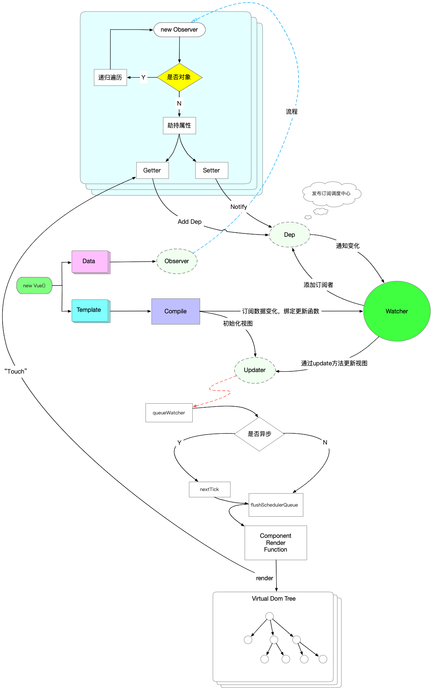

前言
Vue 作为近两年跟React几乎并驾齐驱的前端框架，其在前端开发中的地位是尤其重要，其轻量、易用、灵活、入门简单的特点收到很多前端开发者的推崇，本文主要揭秘Vue的架构、响应式原理、状态更新及vue@3重大更新。
架构
Vue是MVVM架构的最佳实践,是一个JavaScript MVVM库，是一套构建用户界面的渐进式框架。专注于 MVVM 中的 ViewModel，不仅做到了数据双向绑定，而且也是一款相对比较轻量级的JS 库。因此说到Vue架构不得不说MVVM。MVVM是目前前端主流架构之一，其从MVC演变而来，演变过程为MVC->MVP->MVVM。MVVM模式图如下：
MVVM由Model,View,ViewModel三部分构成，Model层代表数据模型，也可以在Model中定义数据修改和操作的业务逻辑；View代表UI 组件，它负责将数据模型转化成UI 展现出来，ViewModel是一个同步View和Model的对象。- 在
MVVM架构下，View和Model之间并没有直接的联系，而是通过ViewModel进行交互，Model和ViewModel之间的交互是双向的， 因此View数据的变化会同步到Model中，而Model数据的变化也会立即反应到View上。 ViewModel通过双向数据绑定把View层和Model层连接了起来，而View和Model之间的同步工作完全是自动的，无需人为干涉，因此开发者只需关注业务逻辑，不需要手动操作DOM, 不需要关注数据状态的同步问题，复杂的数据状态维护完全由MVVM来统一管理。- 特点：
- 双向数据绑定
- 数据与视图层分离
Vue原理
Vue原理相对于React来说比较简单易懂，源码也没有React那么复杂，整体调试过程和阅读过程比较清晰，具体原理图如下：

Vue是采用Object.defineProperty的getter和setter，并结合发布订阅模式来实现数据绑定的。当把一个普通 Javascript 对象传给 Vue 实例来作为它的 data 选项时，Vue 会递归遍历它的属性，用Object.defineProperty将它们转为getter/setter。用户看不到getter/setter，但是在内部它们让 Vue 追踪依赖，在属性被访问和修改时通知变化。Observer： 数据监听器，能够对数据对象的所有属性进行监听，如有变动可拿到最新值并通知订阅者，内部采用Object.defineProperty的getter和setter来实现。Compile： 指令解析器，它的作用对每个元素节点的指令进行扫描和解析，根据指令模板替换数据，以及绑定相应的更新函数。Watcher： 订阅者， 作为连接 Observer 和 Compile 的桥梁，能够订阅并收到每个属性变动的通知，执行指令绑定的相应回调函数。Dep： 消息订阅器，内部维护了一个数组，用来收集订阅者（Watcher），数据变动触发notify 函数，再调用订阅者的 update 方法。
Vue原理中比较重要的就是双向绑定实现、响应式实现、发布订阅模式、nextTick、updateQueue，下面我们分别进行介绍。
双向数据绑定
Vue中双向绑定是通过defineProperty实现的，下面我们介绍简单的双向绑定实现：
首先，我们需要了解Object上属性劫持方法：Object.defineProperty和Object.defineProperties。这两个方法可以实现对象中属性getter和setter方法定义，从而实现属性的劫持，例如：
1 | const obj = {}; |
输出结果如下：
1 | get方法被调用 |
可以从这里看到，这是在对更底层的对象属性进行编程。简单地说，也就是我们对其更底层对象属性的修改或获取的阶段进行了拦截（也可以称之为对象属性钩子）。
在这数据拦截的基础上，我们可以手写数据的双向绑定：
1 | const obj = {}; |
1 | <div id="mvvm"> |
在线演示demo1：
根据上面我们简单的实现了一个双向绑定功能。这是Vue的基础，Vue中的响应式本质上就是跟上面一样，下面简单实现Vue中的响应式代码。
响应式实现
定义Vue的data的属性响应式
1
2
3
4
5
6
7
8
9
10
11
12
13
14
15function defineReactive (obj, key, value){
Object.defineProperty(obj,key,{
get:function(){
console.log("get了值"+value);
return value;//获取到了值
},
set:function(newValue){
if(newValue === value){
return;//如果值没变化，不用触发新值改变
}
value = newValue;//改变了值
console.log("set了最新值"+value);
}
})
}这里的obj我们这定义为vm实例或者vm实例里面的data属性。
defineProperty这个方法，不仅可以定义obj的直接属性，比如obj.hello这个属性。也可以间接定义属性比如：obj.middle.hello。这里导致的效果就是两者的hello属性都被定义成响应式了。observe方法循环调用响应式方法。1
2
3
4
5function observe (obj,vm){
Object.keys(obj).forEach(function(key){
defineReactive(vm,key,obj[key]);
})
}Vue初始化实例
1
2
3
4
5
6
7
8
9
10function Vue(options){
this.data = options.data;
var data = this.data;
observe(data,this);//这里调用定义响应式方法
var id = options.el;
var dom = nodeContainer(document.getElementById(id),this);
document.getElementById(id).appendChild(dom); //把虚拟dom渲染上去
}在Compile方法中处理
v-model指令：1
2
3
4
5
6
7
8
9
10
11
12
13
14
15
16
17
18
19
20function compile(node, vm){
var reg = /\{\{(.*)\}\}/g;
if(node.nodeType === 1){
var attr = node.attributes;
//解析节点的属性
for(var i = 0;i < attr.length; i++){
if(attr[i].nodeName == 'v-model'){
var name = attr[i].nodeValue;
node.addEventListener('input',function(e){
console.log(vm[name]);
vm[name] = e.target.value;//改变实例里面的值
});
node.value = vm[name];//讲实例中的data数据赋值给节点
}
}
}
}
在线演示demo2：
实现效果（观察控制台）：
1 | get了值HelloWorld |
通过上面代码我们实现了，在输入框里面输入，同时触发getter&setter，去改变vm实例中data的值。也就是说Vue原理的图例中经过getter&setter已经成功了。上述仅是抽象出的简化代码，真实的Vue代码中还有Dep，Observer以类的形式存在并递归属性等等…，此处不做完全代码拷贝。接下去就是订阅——发布者模式。
发布订阅模式
发布订阅模式在前端开发中用处比较广泛，大部分前端框架中都会涉及到该设计模式，尤其是实时通信框架；那么什么是发布订阅模式？
简单点说：例如微信里面经常会订阅一些公众号，一旦这些公众号发布新消息了。那么他就会通知你，告诉你：我发布了新东西，快来看。
这种场景下，你就是订阅者，公众号就是发布者。
所以我们要模拟这种情景，我们需要
- 声明订阅者：每个订阅者对象内部声明一个update方法来触发订阅属性。
1
2
3
4
5
6
7
8
9
10
11
12
13
14
15var sub1 = {
update:function(){
console.log(1);
}
}
var sub2 = {
update:function(){
console.log(2);
}
}
var sub3 = {
update:function(){
console.log(3);
}
} - 声明一个发布者，去触发发布消息，通知的方法：
1
2
3
4
5
6
7
8
9
10function Dep(){
this.subs = [sub1,sub2,sub3];//把三个订阅者加进去
}
Dep.prototype.notify = function(){//在原型上声明“发布消息”方法
this.subs.forEach(function(sub){
sub.update();
})
}
var dep = new Dep();
dep.notify(); - 声明另外一个中间对象作为调度中心实现效果：
1
2
3
4
5
6
7var dep = new Dep();
var pub = {
publish:function(){
dep.notify();
}
}
pub.publish();//这里的结果是跟上面一样的1
2
31
2
3
到这，我们已经实现了：
- 修改输入框内容 => 触发修改vm实例里的属性值 => 触发set&get方法
- 订阅成功 => 发布者发出通知notify() => 触发订阅者的update()方法
接下来重点要实现的是介绍Vue是如何更新的。
观察者模式
上面介绍了发布订阅模式，在前端中说到发布订阅模式就会联想到观察者模式，两者的界限比较小，容易混淆，但两者之间确实存在明显区别，观察者模式是直接观察数据源，数据元更新时观察者直接收到通知；而发布订阅模式中间会存在一个名叫调度中心的中间层，观察者的监听事件都是注册到调度中心，发布者更新后会通知调度中心，调度中心根据数据源变化通知相应的观察者，同时在调度中心里可以进行一些派发检测等逻辑处理，例如实现部分消息不下发
更新
从原理图中可以看出，Vue的更新分为异步和同步，核心代码在queueWatcher方法中
1 | export function queueWatcher (watcher: Watcher) { |
当为同步更新时立即执行flush，输出更新，当为异步时，延迟更新，等待下一帧再输出更新，同步异步与React中类似，事件模型和生命钩子中都是异步，即进行状态更新合并后更新视图，而在定时器，Promise等异步操作中则立即执行视图更新，视图更新过程主要时Virtual DOM diff，当然与React不同的是在diff阶段Vue做了一层优化，即Vue是以组件为单位进行遍历，而React是从根节点判断哪些不需要更新，React中需要自己通过shouldComponentUpdate或者memo实现更新逻辑判断。因此才有Vue速度比React快的说法，当然这个快其实是基于内存开销的基础上的，而React由于JSX的影响，暂时无法做到局部更新Virtual DOM，从而在React16+中推出时间分片、异步渲染的方式进行优化。
nextTick原理
首先看Vue中的源码：
1 | /* @flow */ |
通过上面源码可以发现，nextTick本质上就是创建一个异步任务，通过创建下一轮任务队列执行的任务来延迟函数调用，通过Promise.then、setImmediate、setTimeout 0等手段实现，具体js中任务队列相关可以阅读js 事件驱动
Vue3.0 变化
- 全面支持
typescript：源码完全采用typescript开发 - 使用
Proxy代替Object.defineProperty：放弃低版本浏览器，使用新的api来实现数据劫持功能，有效提升效率并降低内存消耗，低版本浏览器中如果不支持Proxy需要引入额外lib - Virtual DOM 重构：在原有的优化基础上将模版中节点分为动态和静态节点，在更新时以组件为单位，遍历动态节点，vue3.0将 vdom 更新性能由与模版整体大小相关提升为与动态内容的数量相关
Function_based API：引入React中函数式编程思想，解决原有写法中this属性类型声明问题，同时替代mixins实现代码共享，解决mixins存在的一些问题- this属性类型声明问题：data中的属性通过this访问，从代码理解上this应无法直接访问data中属性，不符合代码正常逻辑
mixins问题：mixins 的最大缺点在于我们对它实际上添加到组件中的行为一无所知。这不仅使代码变得难以理解，而且还可能导致名称与现有属性和函数发生冲突
nextTick实现调整：1
2
3
4const p = Promise.resolve();
export function nextTick(fn?: () => void): Promise<void> {
return fn ? p.then(fn) : p
}nextTick从原来的多种方式变成了仅用Promise来创建微任务的方式，主要由于主流浏览器都已经支持Promise，兼容性写法已经没有必要，减少兼容代码有效减少vue体积
总结
以上分析仅个人针对源码理解，如有错误，欢迎提出交流，无法保证与最新版本完全符合，目前Vue@3在Beta迭代中。